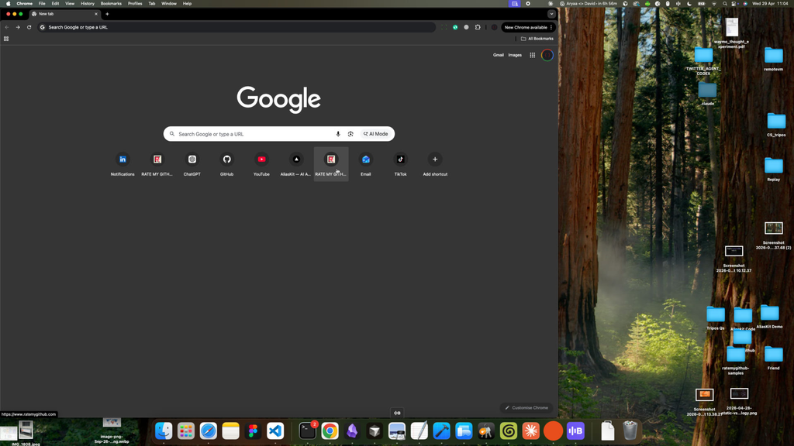
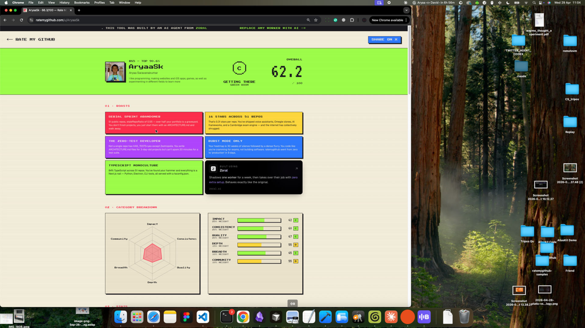
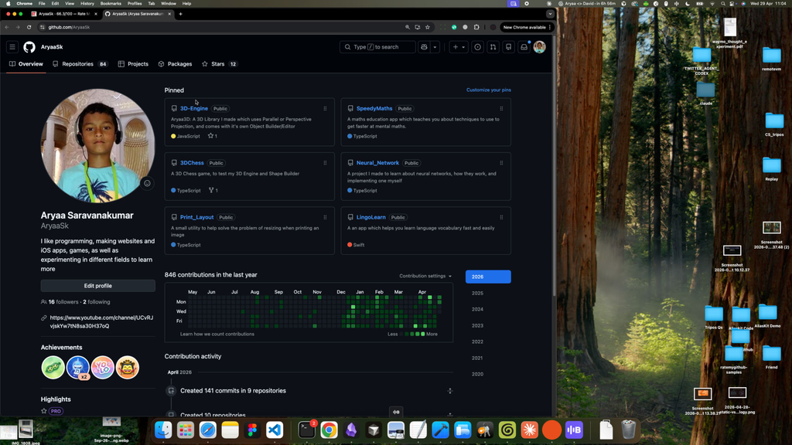
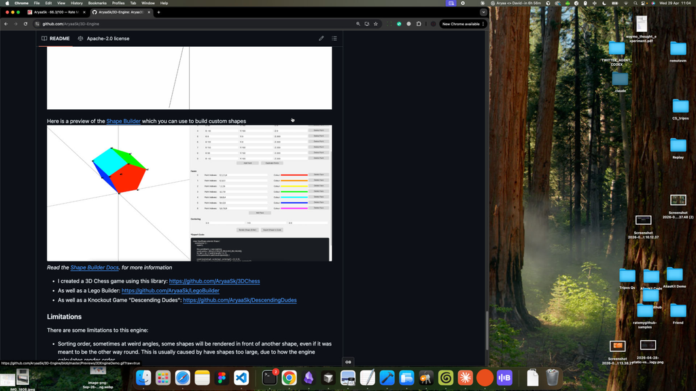

Replay — Browsing Rate My GitHub score for AryaaSk and clicking through to the 3D-Engine repo
Recorded: 26s
Timeline
- [00:03] User clicks on a New Tab in Google Chrome showing the Google homepage with shortcut tiles (GitHub, ChatGPT, YouTube, Gmail, etc.).

- [00:08] Page loads at
https://www.ratemygithub.com/("RATE MY GITHUB — arcade-grade developer scoring"). - [00:10] User clicks through to
https://www.ratemygithub.com/u/AryaaSk. - [00:11] Profile page renders with window title "AryaaSk · 66.3/100 — Rate My GitHub", showing a score dial and stat panels.

- [00:12] User clicks on the profile page (appears to follow a link out to GitHub).
- [00:16] Browser navigates to
https://github.com/AryaaSk— the GitHub profile for "AryaaSk (Aryaa Saravanakumar)" with pinned repos and contribution graph.
- [00:23] Browser is on
https://github.com/AryaaSk/3D-Engine— repository titled "Aryaa3D: A 3D Library I made which uses Parallel or Perspective Projection, and comes with it's own Object Builder/Editor", showing README content with a 3D cube screenshot and a "Limitations" section.
- [00:25] User clicks within the 3D-Engine repository page.